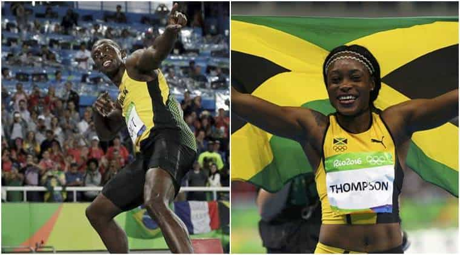
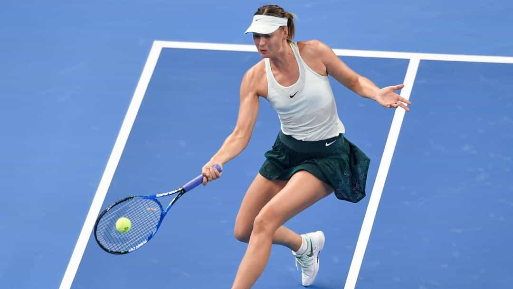

We are constantly told that gender is “non-binary.” Feminists and other SJWs say men can be born biologically female and women can be born biologically male, while plenty of other people supposedly fall outside any male-female distinctions. Surprisingly, however, this insistence on the existence of so many different genders and sexual identities has not flowed down to what leftists demand in professional sporting competitions, which almost always involve men playing men and women playing women. In fact, it all looks awfully like a nod to the “evil” cis-gender dichotomy.
Where are the mixed sporting competitions so that everyone’s “gender” is embraced, not just two? And if one combined sporting field is eschewed (a 100% likelihood since men would cream women), dozens of individual competitions are necessary according to twisted SJW ideology.
Why, for instance, is Wimbledon dominated by the separate Men’s and Women’s singles Grand Slams and not the Men’s, Women’s, Transgender Men’s, and Transgender Women’s singles Grand Slams? After a couple of years, too, shouldn’t the Center Court of the All England Lawn Tennis and Croquet Club play host to a Pansexual singles Grand Slam final? And then a Two-Spirit Gender one?
I give you the 2018 Wimbledon Transgender Women’s singles champion.
There are actually, if you take the braindead musings of SJWs, far more than 60 genders. But here are five dozen or so sarcastically outlined by Alternative für Deutschland (AfD) regional parliamentarian (and shitlord) Steffen Königer:
So when are the rest of these genders getting their own sporting competitions to express their “unique voice and identity”? If the distinction between, say, “androgynes” and men is as valid as the distinction between men and women, why not implement this in sporting competitions? Should logistics get in the way of this, bring in one totally mixed competition that pits men against women, without the furphy of team sports that mandate an equal number of men and women on each side in order to cloak the lesser female performances.
Equal pay and representation for all “genders”–not!

Usain Bolt and Elaine Thompson, the 100m track gold medalists at the 2016 Olympics. If gender is non-binary, where are the other genders?
None of what I have suggested here will ever happen because even calls for “equality” for women’s sport are indefensible. Both the United States and Australian women’s soccer teams, for example, have been thrashed by local city boys’ teams in the past year or so, news of which was barely discussed. Certainly those “pundits” who say that the female game is “just as good” will not take these results into account when they keep arguing for so-called equal pay and coverage.
The problem only gets worse when we consider the likely quality of a hypothetical “pansexual” or “two-spirit gender” team, especially the skills of participants who are biologically female. Yet if mere pronoun use matters so much to the menagerie of made-up genders and their ideological enforcers, why shouldn’t sports, regularly touted as a reflection of hard work, achievement, and individual self-expression, exhibit similar diversity? Questions like this are never examined or answered by the same people who declare that we should inject prepubescent boys and girls with the hormones appropriate for their “gender identity.”
When there have been controversies related to the binary nature of sporting competitions, most prominently in the case of South African sprinter Caster Semenya and her outing as a hermaphrodite, the SJWs were nowhere to be seen. If they wanted to be consistent, they would be as intransigent in the world of sports as they are in spying on whether someone uses “hir” or “zhe” when asked.
There’s self-interest at play, too

Even if she weren’t Russian, one couldn’t imagine a female athlete like Maria Sharapova supporting additional gender competitions that would lose them money.
Media advocates for women’s sport will certainly not call for more gender-based fields, principally because it would take money and attention from non-transgender, etc. female athletes. And the vast majority of the highest-earning women, from Maria Sharapova to Hope Solo, would not want that, either. In this vein, pseudo-gender emancipation and “equality” faces the additional obstacle of self-promoting female athletes who want to keep their piece of the pie, sadly a growing one, intact. These people will keep and play only with the “girl power” elements that suit their careers–and bank balances.
Of all the topics I have covered at Return Of Kings, this is one you can predict the smallest backlash about. Suggesting the “logical” expansion of transgender and related malaises to sport is enough to bamboozle the least crazy and ideologically committed SJWs, let alone the bonafide mad-hatters amongst their ranks.
Still, next time someone tries to shove pronouns or new bathroom rules down your throat, you could deadpan and say we should have 60-odd gender-based competitions for each professional sport as well.
Read More: 5 Things I Learned From Entering Bodybuilding Competitions